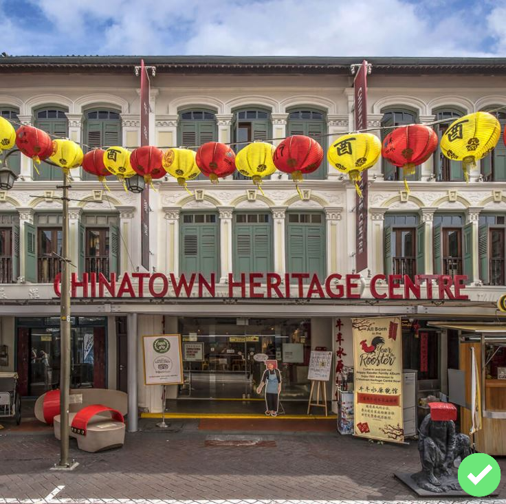
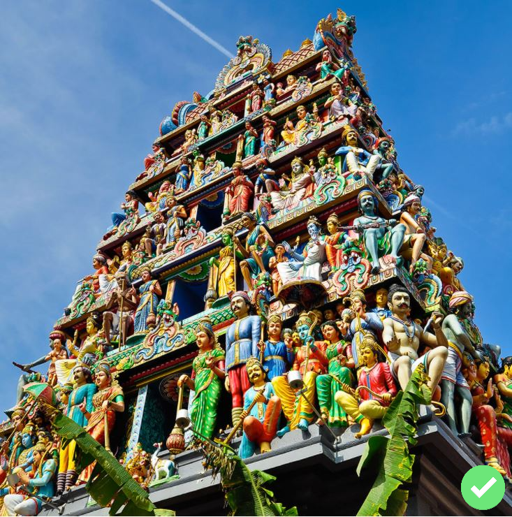
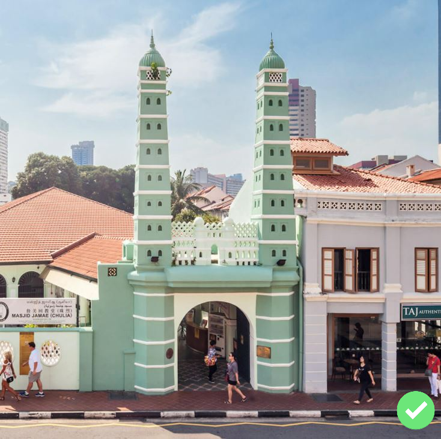
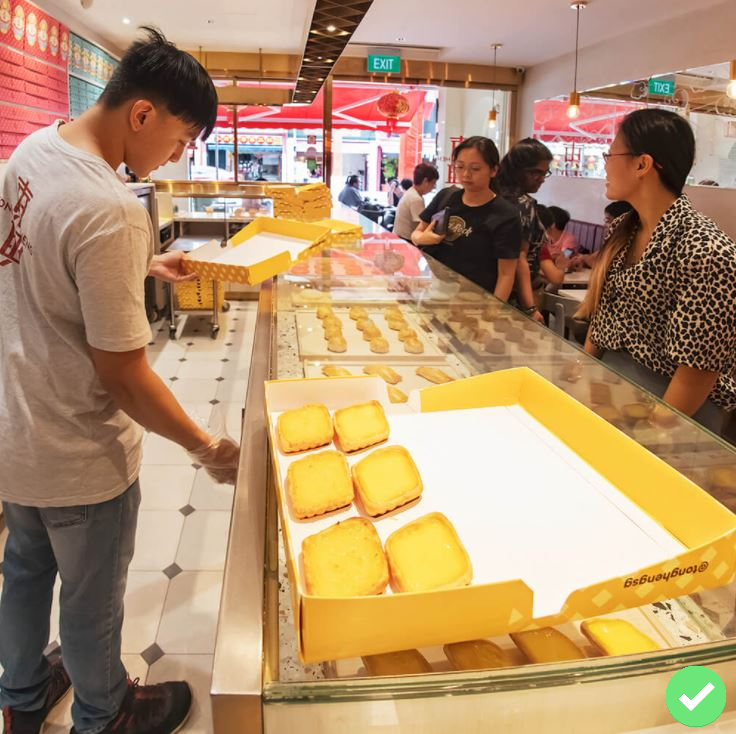
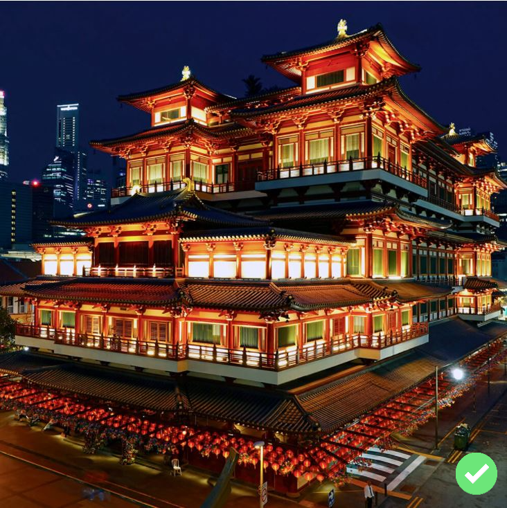
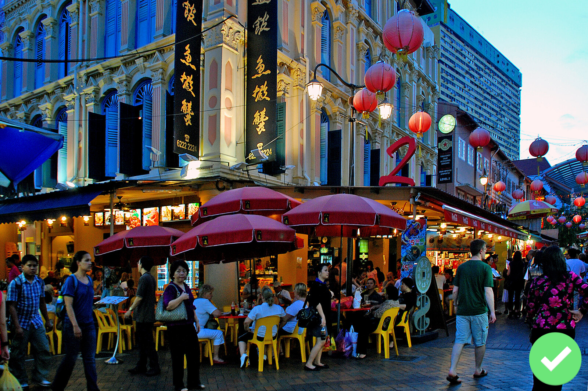
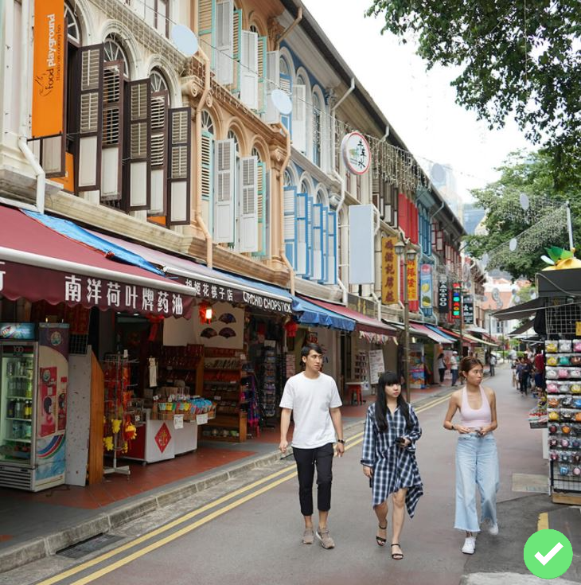
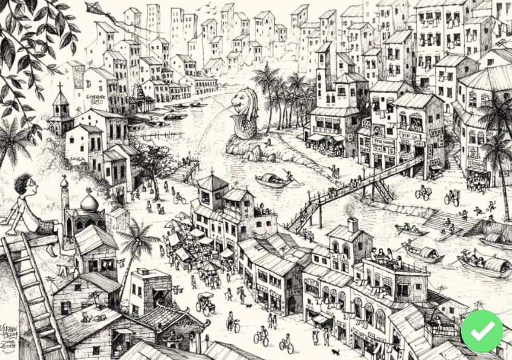

Congratulations!! You have finished the Chinatown Trail.
You have completed 8/8 landmarks!
Chinatown Heritage Centre
Sri Mariamman Temple
Masjid Jamae
Tong Heng
Buddha Tooth Relic
Pagoda Street
Sago Street
Mural on letter writer
Scroll down for more trails!
Little India Trail
Known as Serangoon before 1980s, the Little India precint melds the old with the new and hosts trades from the
past alongside modern businesses.
Indian Heritage Centre
Former House of Tan Teng Niah
Large Mural by Psyfool
Sri Veeramakaliammman Temple
Stretch of Chinese Clan Associations
Foochow Methodist Church
Former Kandang Kerbau Hospital
Tekka Centre
Peranakan Trail
Peranakan culture in Singapore has roots tracing all the way back to Sir Stamford Raffles arrival in 1819.
Koon Seng Road Peranakan Shophouse
Katong Antique House
Church of the Holy Family
Houses with preserved facade
Kim Choo Gallery
Medley Alley
Red House Bakery
Sri Senpaga Vinayagar Temple
Kampong Glam Trail
Kampong Glam got its name from the Malay word gelam (cajeput tree) which grew locally and has many uses. Its
bark can be used for weaving and to caulk boats.


.jpg)